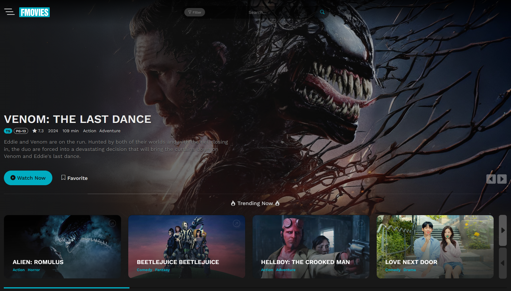

FMovies is a free streaming platform offering thousands of HD movies and TV shows, available instantly with no sign-ups required. Enjoy unlimited access to high-quality content without the need for subscriptions.
FMovies – Watch Free HD Movies & TV Shows Online Anytime
Looking for a way to watch your favorite movies and TV shows online for free? FMovies offers a vast collection of HD content with no sign-ups required. Whether you're into the latest blockbusters or classic TV series, FMovies is one of the best free streaming platforms available. In this guide, we’ll explore why FMovies stands out and how you can enjoy all its features.
Why Choose FMovies?
FMovies offers an extensive library of thousands of movies and TV shows across genres like action, drama, comedy, and more. Whether you're into the latest blockbusters or classic favorites, FMovies has something for every taste. Plus, the platform is user-friendly and regularly updated, making it a go-to site for free entertainment.
Key Features of FMovies:
- Vast Movie Library: From Hollywood hits to international gems, FMovies has it all.
- No Registration Required: Start streaming instantly with no need to sign up.
- HD Streaming: Enjoy high-quality movies in 720p and 1080p resolution.
- Multiple Streaming Servers: If one link isn’t working, switch to another server and keep watching.
How to Stream Safely on FMovies
While FMovies is great for streaming free movies and TV shows, it’s important to stream safely. Here's how to protect yourself while enjoying your favorite content:
- Use a VPN: A VPN (Virtual Private Network) protects your identity and encrypts your internet connection, ensuring your privacy while streaming.
- Watch Out for Clickbait Ads: Like other free streaming sites, FMovies contains ads. Be cautious of pop-ups or redirects to suspicious websites.
- Enable an Ad Blocker: Using an ad blocker can help avoid interruptions and improve your streaming experience.
Popular Categories on FMovies
FMovies makes it easy to find the content you love thanks to its organized categories. Here are some of the most popular categories you should explore:
- Latest Movies: Stay up to date with the newest movie releases.
- Top TV Shows: Catch up on the most popular series that everyone’s talking about.
- Genre Selection: Browse through action, romance, thriller, comedy, and more to find the perfect movie for your mood.
Is FMovies Legal?
The legality of streaming on FMovies depends on where you are and what you're watching. FMovies doesn't host its own content; instead, it links to media already available on the web. Always check your local laws to ensure you're streaming legally. If you're concerned about legality, consider trying legal streaming alternatives like Pluto TV, Tubi, or Sony Crackle, which offer free, ad-supported content.
Alternatives to Watch Movies for Free
If FMovies isn’t quite what you're looking for, there are other free, legal streaming sites available:
- Pluto TV: Offers both live TV and on-demand movies, all for free.
- Tubi TV: A free, ad-supported service with a large library of movies and TV shows.
- Sony Crackle: Streams popular movies and TV shows, mostly available in the U.S.
FMovies makes it easy to watch movies and TV shows online for free. By streaming safely and exploring all the content available, you can enjoy hours of entertainment without spending a dime. Just make sure to stay informed about the legalities and always protect your privacy online.